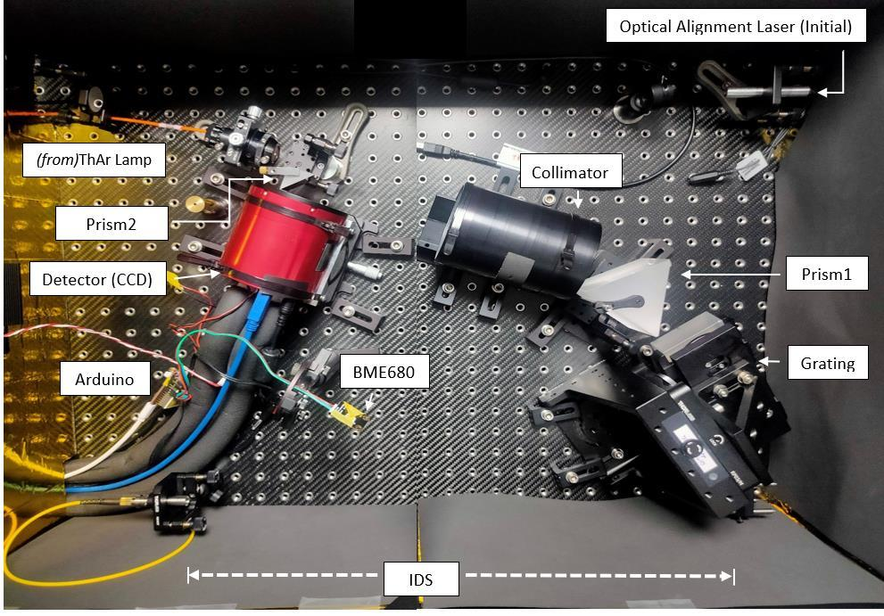

Provisional report-derived subtotal.
02 / Interactive storyline
2023–October 2026
Each experiment changes the next question.
Select a stage to follow the progression from system understanding the bench and its data path to software debugging, long-duration feedback, measurement refinement and a testable physical intervention.
2023–Apr 2024
Initial project brief and measurement question
The October 2023 project plan framed closed-loop control around the IDS displacement sensor, spectrograph output and environmental variables. The first task was to understand what each part of the inherited instrument measured before claiming a correction.
